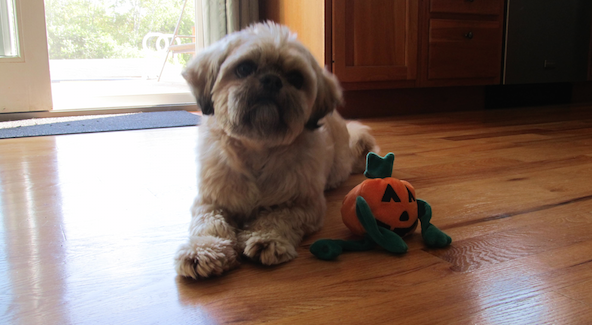
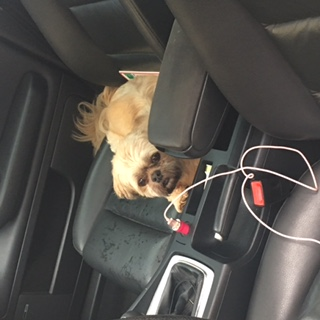

 
Ozzy is an eight-year-old Shih Tzu that I got for my thirteenth birthday. He was the sleepiest puppy I had ever seen. He really didn't do much! Not much has changed. He still enjoys sunbathing in front of the glass sliding door, having an animal cracker or a piece of turkey as a light snack, and growling at anyone who tries to pick him up without "asking" him for his permission.
Ozzy knows several tricks. These tricks include: sit, down, dance, shake, and wag. He usually will perform for free, but extra enthusiasm is added when a yummy treat is present in his owner's hand.